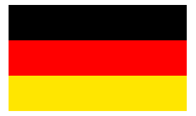
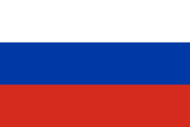
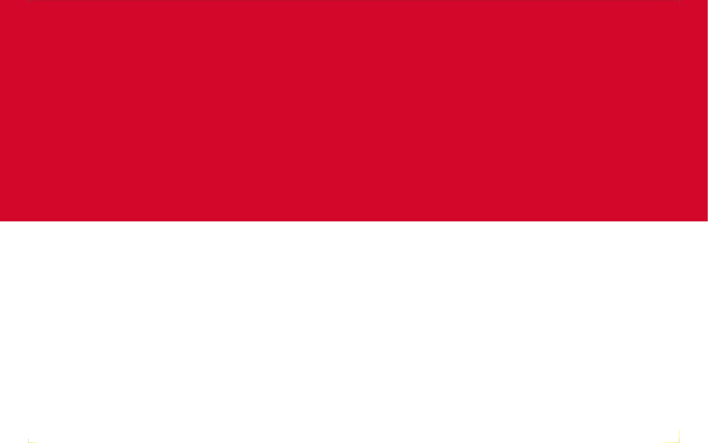

| Paises | Porcentaje del total(1.7 billones de Toneladas | Imagen del Pais |
|---|---|---|
| China | 13.9% |  |
| Estados Unidos | 24.5% |  |
| Alemania | 5.4% |  |
| India | 2.3% |  |
| Rusia | 6.8% |  |
| Paises | Valor en Toneladas Metricas anuales, en millones | Imagen del Pais |
|---|---|---|
| China | 8.8 | |
| Indonesia | 3.2 |  |
| Filipinas | 1.9 |  |
| Vietnam | 1.8 |  |
| Sri Lanka | 1.6 |  |